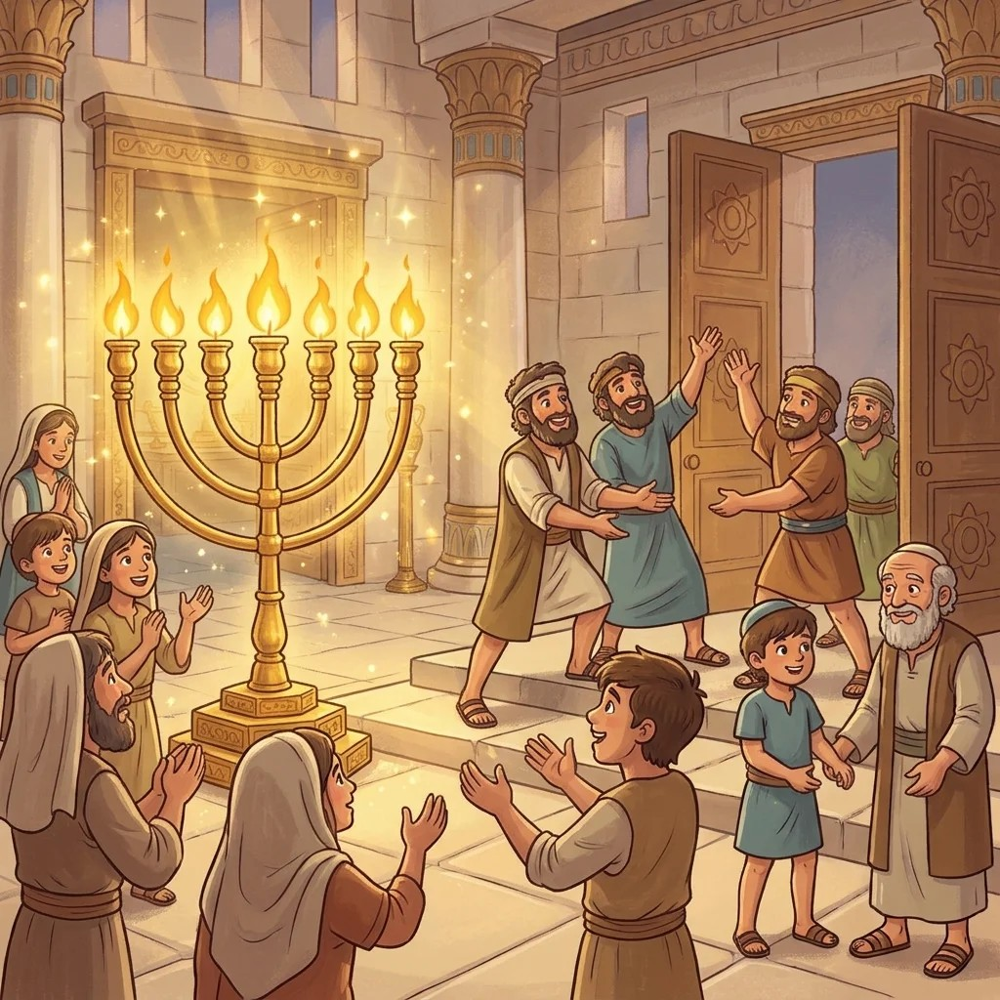

לפני הרבה מאוד שנים שלטו היוונים בארץ ישראל. הם רצו שכולם יחיו כמוהם, ולכן אסרו על היהודים לשמור שבת וללמוד תורה. הם אפילו נכנסו לבית המקדש בירושלים, הציבו בו פסלים וטימאו את כל כדי השמן שבהם הדליקו את המנורה.
בכפר קטן בשם מודיעין גר כהן זקן ואמיץ בשם מתתיהו. כשהחיילים היוונים ציוו עליו להשתחוות לפסל, הוא סירב, הרים את ידו וקרא בקול: "מי לה' – אליי!" ואנשים רבים נאספו סביבו.
בניו של מתתיהו, ובראשם יהודה המכבי, יצאו להילחם ביוונים. הם היו קבוצה קטנה מול צבא ענק וחזק, אבל היה להם אומץ, הם הכירו כל שביל בהרים והאמינו בדרכם. וכך, למרות הכול, המכבים ניצחו – הרבים נמסרו ביד המעטים.
אחרי הניצחון חזרו המכבים לירושלים. הם ניקו את בית המקדש, הוציאו ממנו את הפסלים ורצו להדליק שוב את המנורה. אבל איפה ימצאו שמן טהור? הם חיפשו וחיפשו, ובסוף מצאו פך שמן קטן אחד – שמן שמספיק ליום אחד בלבד.
הם הדליקו את המנורה, וקרה נס: השמן הקטן דלק לא יום אחד, אלא שמונה ימים שלמים! לזכר הנס הזה אנחנו מדליקים חנוכייה שמונה ימים, ואומרים יחד: "נס גדול היה שם".